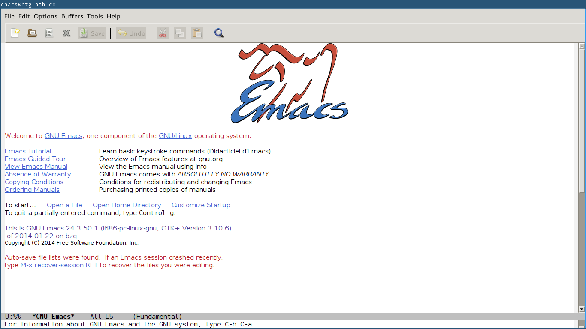
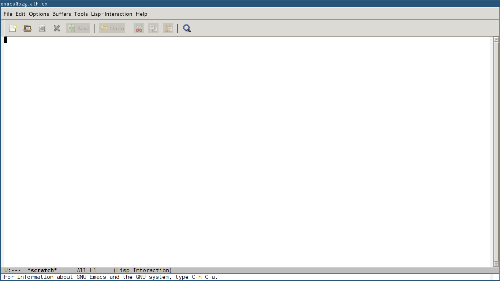
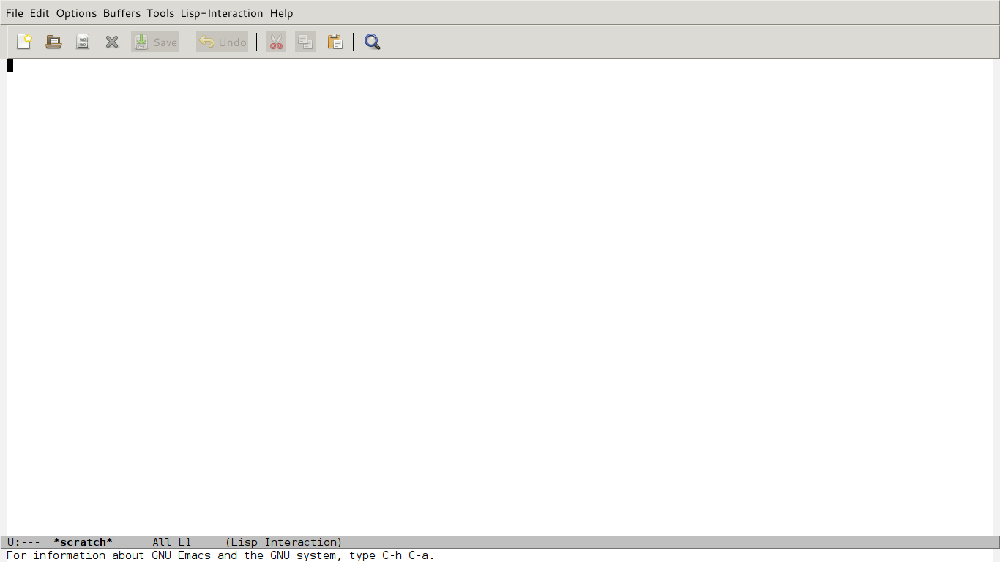
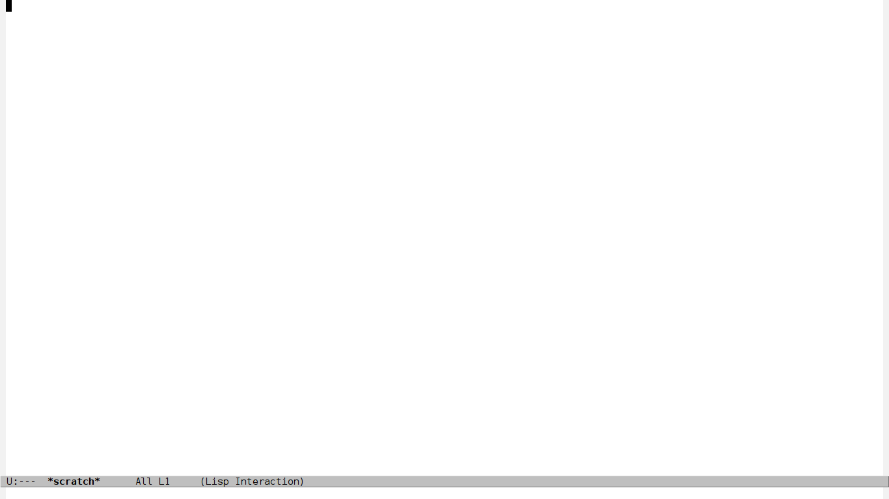
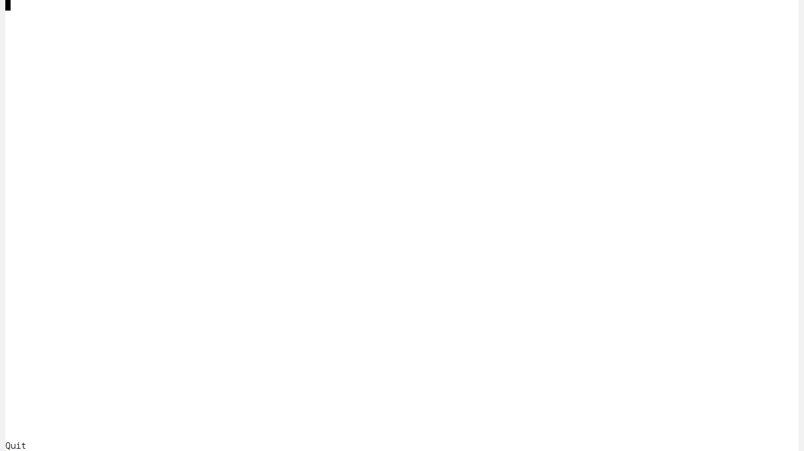
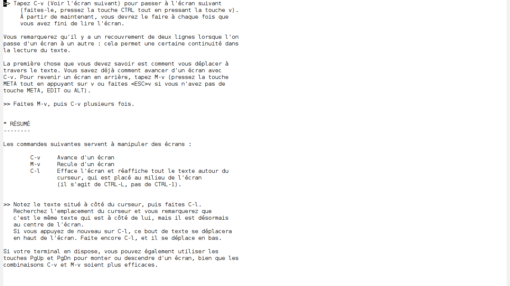
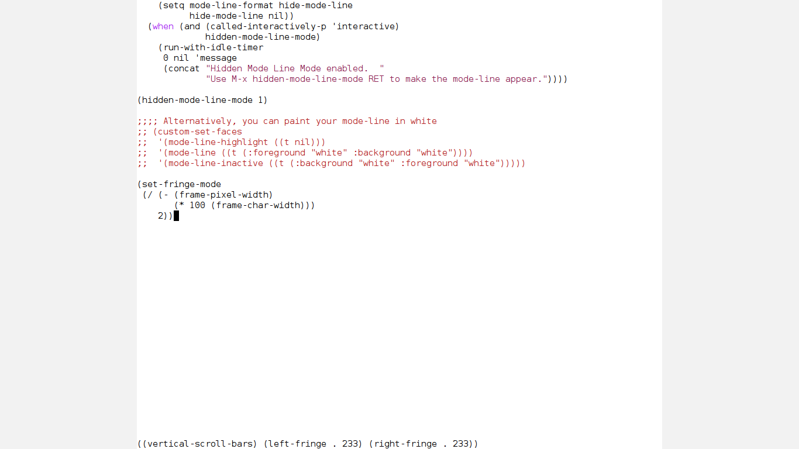
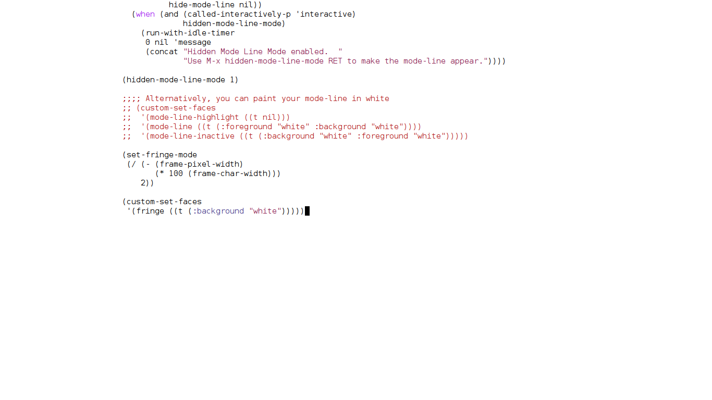
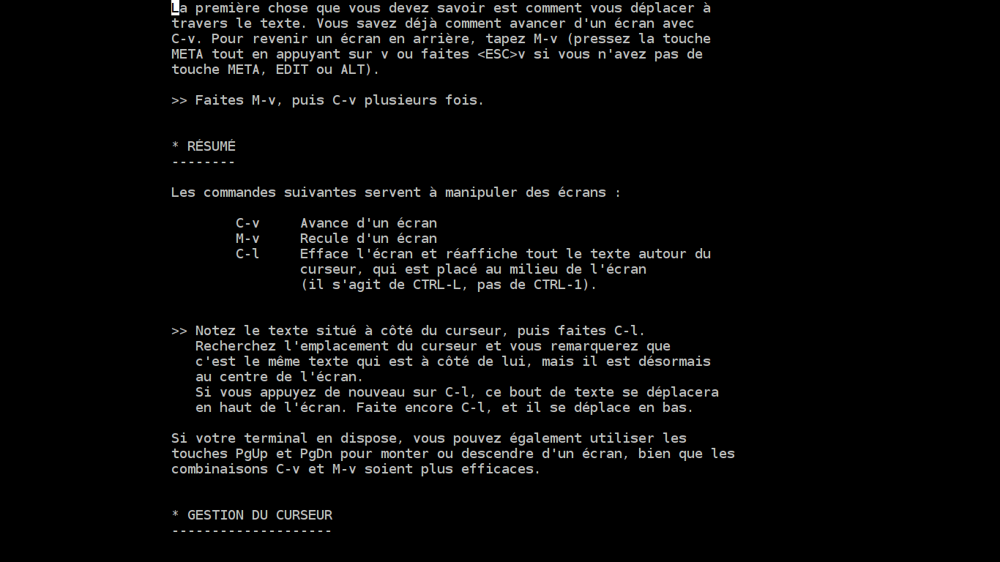
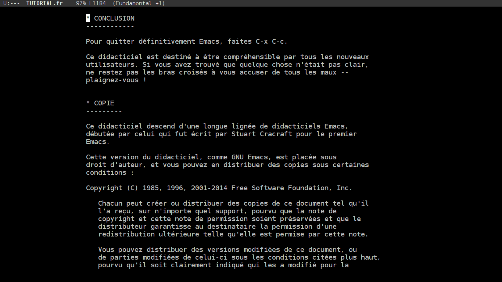

Emacs, naked.
When it gets too cold, you can always put on more layers of clothing. But when it gets too hot, after a while you can’t take off any more. – RMS
This is GNU Emacs:

Now let the show begin…
Code snippets are for GNU Emacs 24.3 and above.
A blank stage
;; Prevent the cursor from blinking
(blink-cursor-mode 0)
;; Don't use messages that you don't read
(setq initial-scratch-message "")
(setq inhibit-startup-message t)
;; Don't let Emacs hurt your ears
(setq visible-bell t)
;; You need to set `inhibit-startup-echo-area-message' from the
;; customization interface:
;; M-x customize-variable RET inhibit-startup-echo-area-message RET
;; then enter your username
(setq inhibit-startup-echo-area-message "guerry")

Break the walls
;; This is bound to f11 in Emacs 24.4
(toggle-frame-fullscreen)
;; Who use the bar to scroll?
(scroll-bar-mode 0)

The sky is the limit
(tool-bar-mode 0)
(menu-bar-mode 0)
;; You can also set the initial frame parameters
;; (setq initial-frame-alist
;; '((menu-bar-lines . 0)
;; (tool-bar-lines . 0)))

Groundless fear
;; See http://bzg.fr/emacs-hide-mode-line.html
(defvar-local hidden-mode-line-mode nil)
(defvar-local hide-mode-line nil)
(define-minor-mode hidden-mode-line-mode
"Minor mode to hide the mode-line in the current buffer."
:init-value nil
:global nil
:variable hidden-mode-line-mode
:group 'editing-basics
(if hidden-mode-line-mode
(setq hide-mode-line mode-line-format
mode-line-format nil)
(setq mode-line-format hide-mode-line
hide-mode-line nil))
(force-mode-line-update)
;; Apparently force-mode-line-update is not always enough to
;; redisplay the mode-line
(redraw-display)
(when (and (called-interactively-p 'interactive)
hidden-mode-line-mode)
(run-with-idle-timer
0 nil 'message
(concat "Hidden Mode Line Mode enabled. "
"Use M-x hidden-mode-line-mode to make the mode-line appear."))))
;; Activate hidden-mode-line-mode
(hidden-mode-line-mode 1)
;; If you want to hide the mode-line in all new buffers
;; (add-hook 'after-change-major-mode-hook 'hidden-mode-line-mode)
;; Alternatively, you can paint your mode-line in White but then
;; you'll have to manually paint it in black again
;; (custom-set-faces
;; '(mode-line-highlight ((t nil)))
;; '(mode-line ((t (:foreground "white" :background "white"))))
;; '(mode-line-inactive ((t (:background "white" :foreground "white")))))

Well… it’s more interesting with some text:

In the limelight
;; A small minor mode to use a big fringe
(defvar bzg-big-fringe-mode nil)
(define-minor-mode bzg-big-fringe-mode
"Minor mode to use big fringe in the current buffer."
:init-value nil
:global t
:variable bzg-big-fringe-mode
:group 'editing-basics
(if (not bzg-big-fringe-mode)
(set-fringe-style nil)
(set-fringe-mode
(/ (- (frame-pixel-width)
(* 100 (frame-char-width)))
2))))
;; Now activate this global minor mode
(bzg-big-fringe-mode 1)
;; To activate the fringe by default and deactivate it when windows
;; are split vertically, uncomment this:
;; (add-hook 'window-configuration-change-hook
;; (lambda ()
;; (if (delq nil
;; (let ((fw (frame-width)))
;; (mapcar (lambda(w) (< (window-width w) (/ fw 2)))
;; (window-list))))
;; (bzg-big-fringe-mode 0)
;; (bzg-big-fringe-mode 1))))
;; Use a minimal cursor
;; (setq default-cursor-type 'hbar)
;; Get rid of the indicators in the fringe
(mapcar (lambda(fb) (set-fringe-bitmap-face fb 'org-hide))
fringe-bitmaps)

Oh, but you don’t want the grey fringe?
;; Set the color of the fringe
(custom-set-faces
'(fringe ((t (:background "white")))))

Let’s turn off the light…
(custom-set-faces
'(default ((t (:background "black" :foreground "grey"))))
'(fringe ((t (:background "black")))))

Enjoy !
(Keep the sound muted.)
Download the video here.
Download the full Elisp file here or read it as a gist.
Bonus trick
Ok, sometimes I still want to see what’s in the mode-line.
I use the C-s-SPC key for this (Control Super Space) with
this simple function to display the mode-line in the header:
;; Command to toggle the display of the mode-line as a header
(defvar-local header-line-format nil)
(defun mode-line-in-header ()
(interactive)
(if (not header-line-format)
(setq header-line-format mode-line-format
mode-line-format nil)
(setq mode-line-format header-line-format
header-line-format nil))
(set-window-buffer nil (current-buffer)))
(global-set-key (kbd "C-s-SPC") 'mode-line-in-header)

Discussed on HN: https://news.ycombinator.com/item?id=7107893